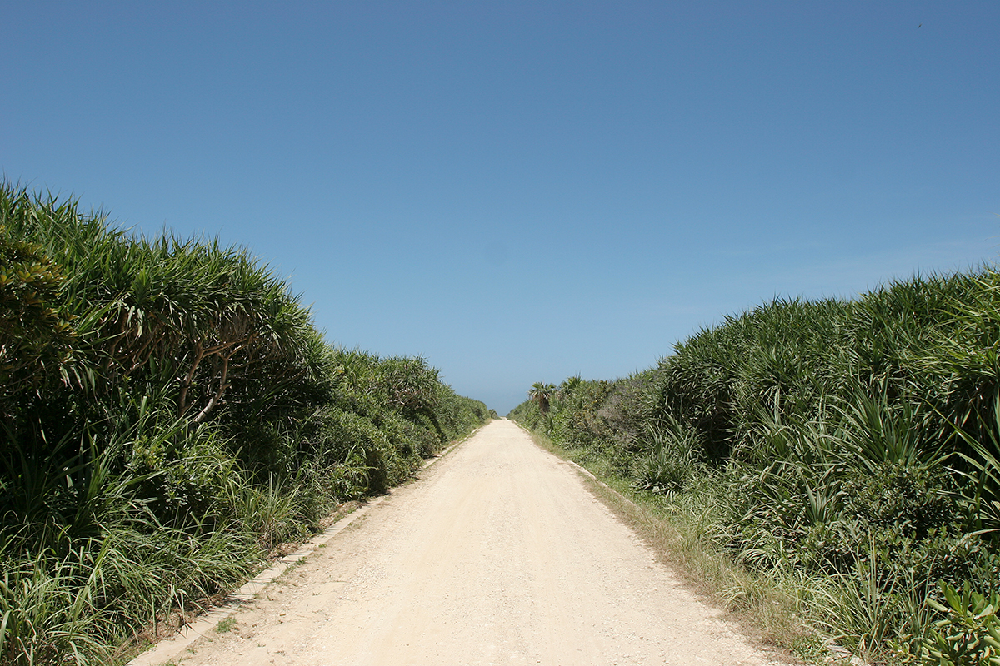
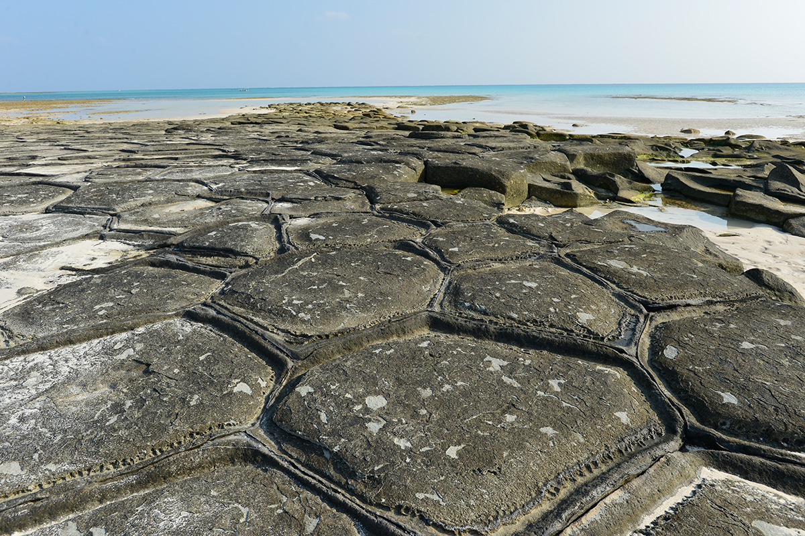
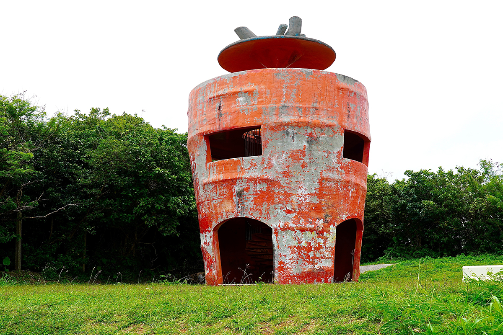

Префектура Окинава · острова Оу, Цукэн и Кудака · острова
Оу, Цукэн и Кудака: каменный панцирь, морковный остров и остров богов

В водах префектуры Окинава лежат около 160 больших и малых островов, и у каждого свой характер. Кроме острова Окинава здесь 37 обитаемых островов, которые официально считаются отдалёнными. Мы выбрали три самых маленьких и непохожих друг на друга: Оу, Цукэн и Кудаку.
Оу
Остров, вымощенный черепашьим панцирем
Оу совсем крошечный: 0,63 квадратных километра, около 1,7 километра по берегу, высшая точка всего 16 метров над морем. В 2024 году здесь жили 29 человек. Остров относится к посёлку Кумэдзима, и добираются сюда с соседнего Кумэдзимы, большого острова к западу от острова Окинава: на машине от аэропорта Кумэдзимы около 30 минут, от порта около 20.
Главное, ради чего сюда едут, это «Татами-иси», «камни-татами». Плоские многоугольные плиты покрывают берег так плотно, что сверху он похож на панцирь огромной черепахи. Узор появился, когда магма застыла у самого морского дна, и сегодня эти камни охраняются государством как природный памятник.

Кроме камней на острове есть место, где можно увидеть морских черепах, и кемпинг. Такси, машину, мотороллер или велосипед напрокат лучше заранее найти на Кумэдзиме.
Остров Оу
- Адрес
- префектура Окинава, уезд Симадзири, посёлок Кумэдзима, остров Оу
- Телефон
- +81 98-851-7973 (туристическая ассоциация посёлка Кумэдзима)
- Как добраться
- на машине около 30 минут от аэропорта Кумэдзимы и около 20 минут от порта Кумэдзимы
Цукэн
Морковь до горизонта
Цукэн лежит у восточного берега острова Окинава и относится к городу Урума. Площадь острова 1,88 квадратного километра, по берегу около 8 километров, высшая точка 38 метров. В 2024 году здесь жил 371 человек.
Восемь десятых острова занимают поля, и шесть десятых из них отданы под морковь. Поэтому Цукэн называют «Кяротто ай-рандо», «морковным островом». В сезон урожая в порту вырастают горы моркови, и это главная сезонная примета острова. Обязательно поднимитесь на «морковную смотровую площадку»: башня и сама сделана в форме огромной морковки.

Остров небольшой, его удобно объезжать на велосипеде или обходить пешком.
Остров Цукэн
- Адрес
- префектура Окинава, город Урума, остров Цукэн
- Телефон
- +81 98-978-7373 (туристический центр в парке «Амавари» у руин замка Кацурэн)
- Как добраться
- из порта Хэсикия (город Урума) на скоростном судне около 15 минут или на пароме «Кугани» до порта Цукэн около 30 минут
Кудака
Остров богов
Кудаку почитают как остров богов. По рюкюским преданиям, именно здесь, у мыса Кабэру, который на острове зовут «Хабьян», впервые ступила на землю Амамикиё, богиня, сотворившая Рюкю. На острове показывают и дорогу, по которой она прошла вглубь Кудаки: прямую светлую тропу в зарослях.
Кудака лежит у юго-восточного берега острова Окинава и относится к городу Нандзё. Площадь 1,36 квадратного километра, по берегу 7,7 километра, высшая точка 17 метров. В 2024 году на острове жил 231 человек. Передвигаться здесь можно на арендованном велосипеде, электросамокате или электрическом тук-туке.
Остров Кудака
- Адрес
- префектура Окинава, город Нандзё, остров Кудака
- Телефон
- +81 98-948-4611 (туристическая ассоциация города Нандзё)
- Как добраться
- из порта Адзама (город Нандзё) на скоростном судне около 15 минут или на пароме «Кудака III» около 25 минут
Фото: OCVB.